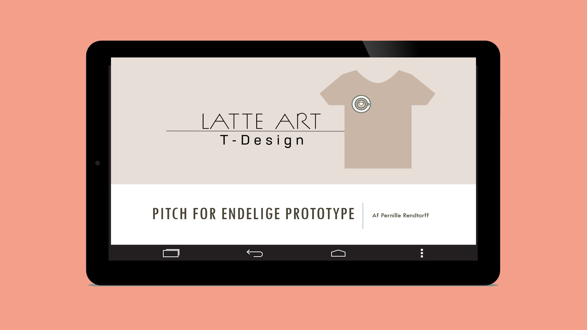

Tema 3
03.03.03 Pitch
Efter research, udvikling, design og forbedring af prototypen for en fiktiv t-shirt webshop, bød temaet på at vi skulle pitche vores produkt.
Det forløb sig efter følgende proces:
- Pitch
- Feedback

Proces
I små grupper, skulle vi pitche vores forbedrede resultat. For mit vedkommende, endte det ud i en PowerPoint præsentation, hvor jeg til at starte med præsenterede mine research-resultater, min ide for webshoppen, design og udviklingsprocessen og til slut lavede jeg en refleksion over hvad jeg synes jeg kunne forbedre til næste projekt.
Efter pitchen, blev vi bedt om at give hinanden feedback, på baggrund af præsentationen, og jeg modtog følgende konstruktiv feedback:
- ”Less is more” – giv over de 5 minutters længde
- God brug af faglige begreber, og flot opsætning
Overordnet lærte jeg at jeg for fremtiden skal skære ind til benet, og til fremtidige pitchs, øve en elevatortale, fremfor en fremlæggelse. Jeg vil fortsætte med at lave velorganiseret og spændende PowerPoints, og forsøge at bruge den konstruktive kritik til rettelser for fremtiden.